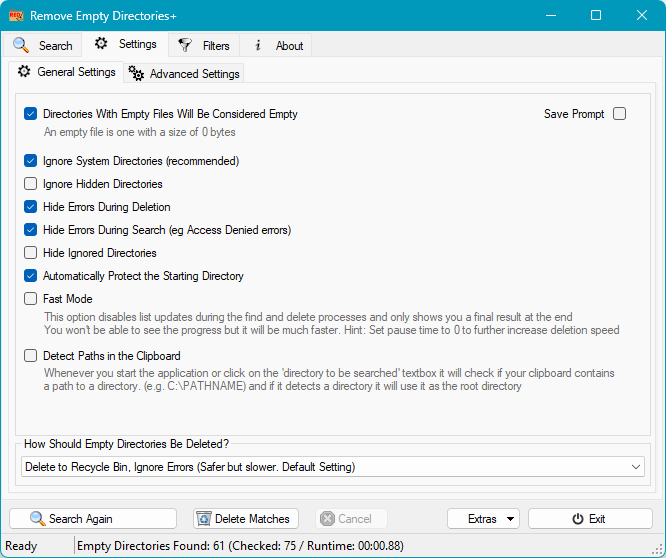
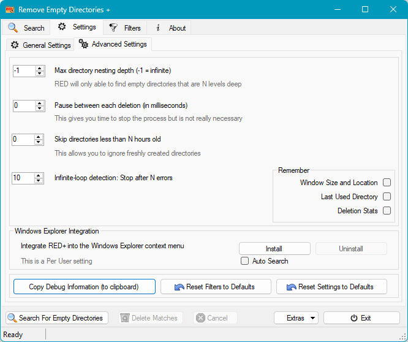
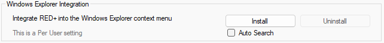
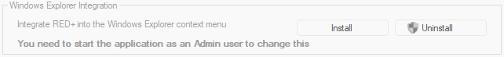
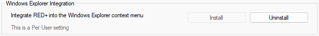

Settings

- Treat Zero-Byte Files as Empty
If a directory contains nothing other than zero-byte files, it can be treated as an empty directory.
- Include Standalone Zero-Byte Files
Also review zero-byte files that are not inside an empty directory. They use the same deletion mode and restore path as directories.
- Ignore System Directories
If a directory has the SYSTEM attribute it will not be processed.
Any sub-directories will also not be processed. - Ignore Hidden Directories
If a directory has the HIDDEN attribute it will not be processed.
Any sub-directories will also not be processed. - Continue Past Deletion Errors
Failed items are left unchanged, logged, and skipped while the remaining deletion queue continues.
- Hide Scan Errors in Results
Scan errors are still logged, but matching rows are hidden from the review list.
- Hide Ignored Directories
Directories matched by the Directories: Ignored filter will not be shown in the review list.
If not set, these directories appear as protected results. - Protect the Starting Directory
Prevents the starting directory specified for the search from being deleted, even if it is empty.
- Fast Result Rendering
This option defers result-list updates during scan and delete operations, then shows the final results when the operation completes. It is useful for very large scans where rendering every intermediate update would slow the run.
- Detect Folder Paths in the Clipboard
When the application starts or the scan-target field receives focus, RED++ can detect a folder path from the clipboard and offer to use it as the scan target.
- Deletion Mode
Specifies how directories and contents should be deleted.
- The default is to put deleted entries into the Recycle Bin
- The Simulate Deletion option does not delete anything
- Save Prompt
In the classic shell, displays a prompt on exit when settings have changed. The modern shell saves settings directly.
Advanced Settings

- Max directory nesting depth
Nested sub-directories will only be checked to the specified depth. If there are sub-directories below this depth the directory is considered not to be empty.
A depth of -1 checks all possible sub-directories.
eg For X:\DIR1\DIR2\DIR3\DIR4\ starting at X:\DIR1 with a depth of 3 will not check beyond DIR3. - Pause Between Deletion Steps
Specifies a number of milliseconds to pause after each directory is deleted. Zero is the default and means there is no delay.
- Skip directories less than N hours old
This allows you to ignore recently created directories.
This checks the Creation Time of the directory, not its contents. - Infinite-loop detection
Search processing will stop after the specified number of errors.
- Respect .gitignore rules during scans
When this option is enabled, directories ignored by a .gitignore file are skipped in the same way as configured ignore filters. This is useful when scanning development workspaces.
- Use MFT turbo scan
When running as administrator, RED++ can use the NTFS/ReFS master file table to find empty directories more quickly on large volumes. If MFT access is unavailable, it falls back to the normal directory walk.
- Remember: Window Size and Location
The size and location of the RED++ window is saved in the configuration file when the program exits and is restored the next time the program starts.
- Remember: Last Used Directory
The last scan target is saved in the configuration file when the program exits and is restored the next time the program starts.
- Remember: Deletion stats
A running total of the number of deletions made is kept in the configuration file. Useful for the numerically obsessive.
Reset Filters to Defaults
This clears any existing filters you have set up and resets them back to the program defaults. A dialog asking you to confirm your intentions is shown.
Reset Settings to Defaults
This resets program settings back to their defaults. Filters are not reset. A dialog asking you to confirm your intentions is shown.
Copy Debug Information
This copies details of your current settings and filters to the clipboard in a human readable format. This can be useful when reporting issues with the program.
Windows Explorer Integration
This places a Remove Empty Directories ++ entry on the Explorer context menu for folders in the navigation pane and the folder contents pane. This is a Per User setting.

If the program is already integrated you can hover over the Uninstall button to display a tooltip showing the command line used in the integration.

